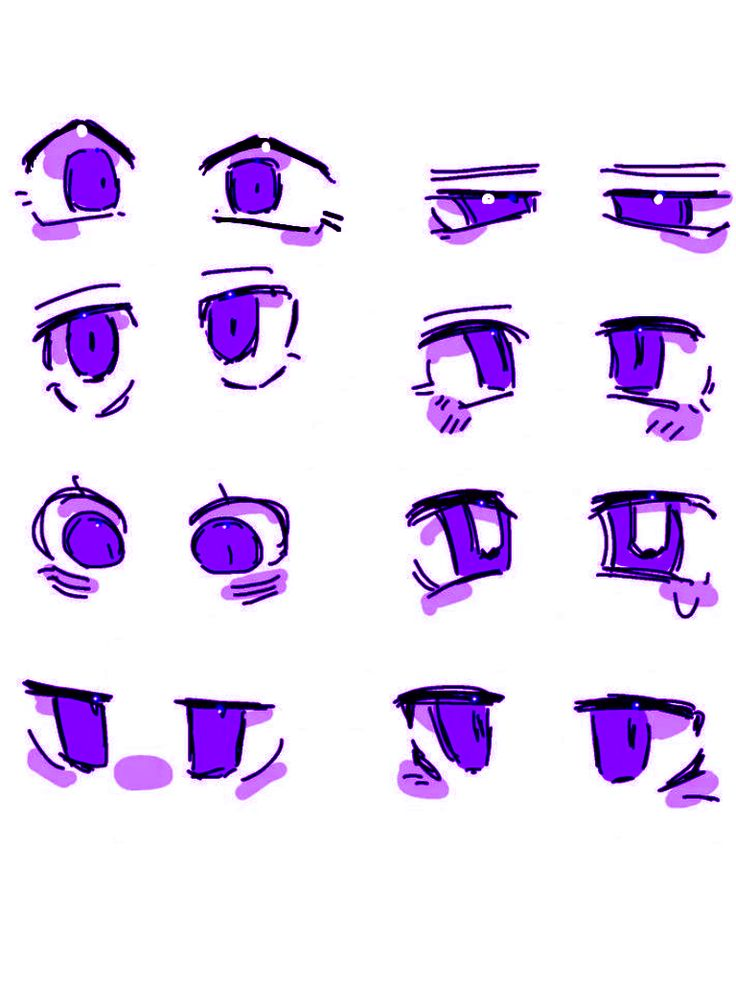

Descrição da Seção
Esta seção ê feita para melhorar seu desenho de olhos
Exemplos
Desenhe todos os desenhos dos exemplos para treinar.

- 
* Para desenhar olhos de furries, comece com formas grandes e expressivas, que são características desse estilo. O formato pode variar, mas olhos amendoados ou arredondados costumam funcionar bem. Desenhe a pupila e o brilho, que são essenciais para transmitir emoções; um brilho bem posicionado pode fazer os olhos parecerem vivos e atraentes.